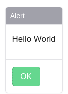

Getting Started
The Scriptor is built on Pyodide and interprets Python files as scripts. Each script has a “main” function, which is called once at the start, acting as the entry point for the script. The Scriptor provides additional modules for simplification. It includes interfaces for dialogues, networking, and logging.
Every newly created script always includes a default output with an alert dialog.
#### scriptor ####
from scriptor import dialog
async def main():
await dialog.alert("Hello World")
The script showcases a simple component with the text “Hello world”. This represents one type of dialog. The documentation will delve into various other types of dialogs as it progresses.
